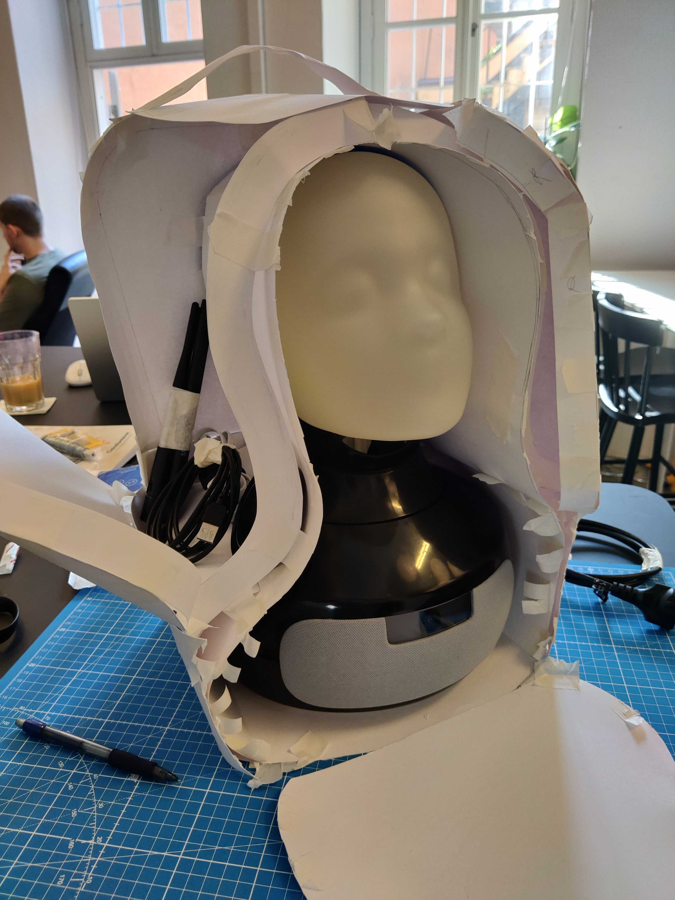
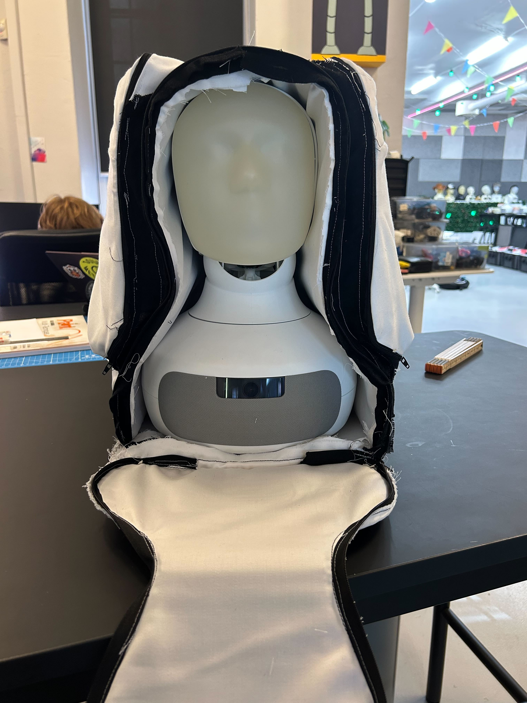
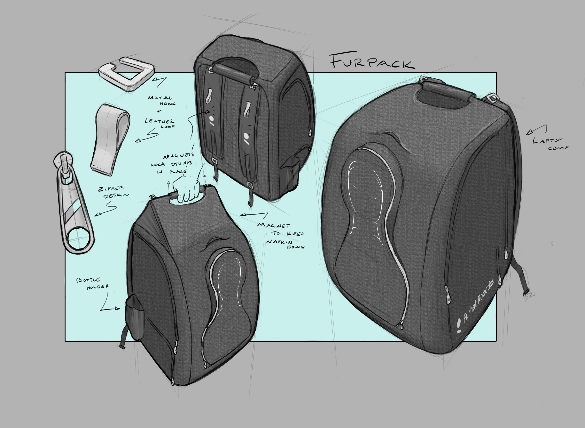
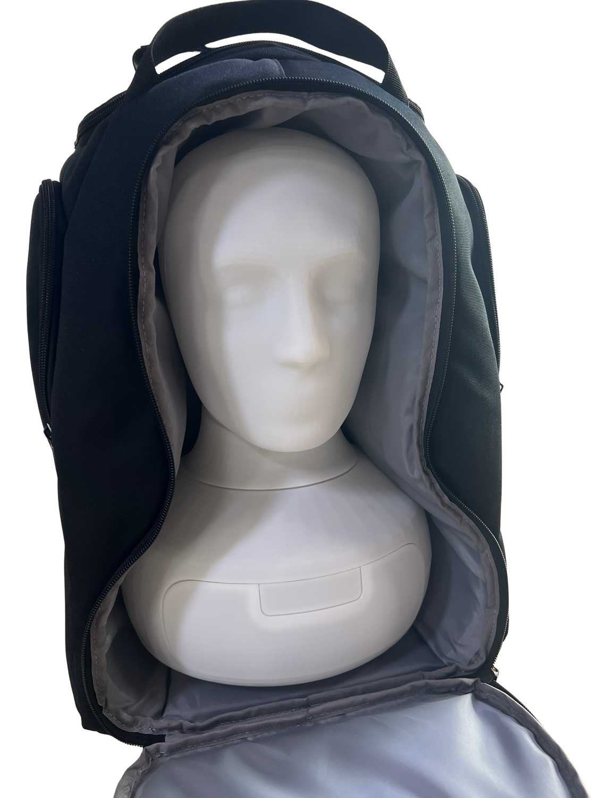
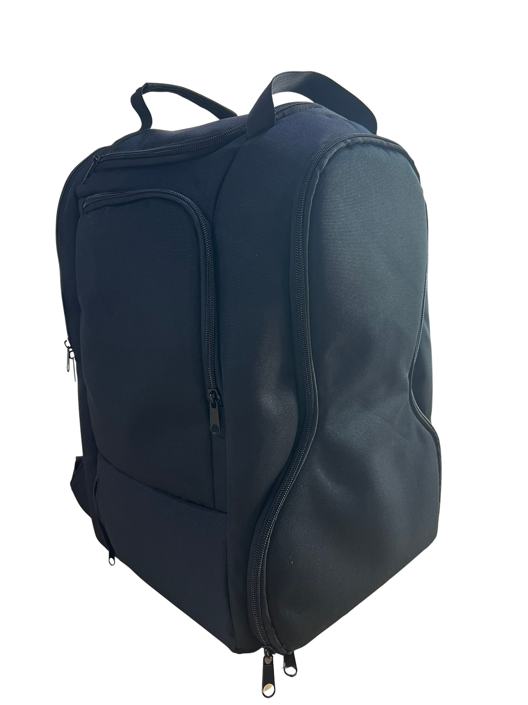

The Furpack
A purpose-built transport backpack developed through mockups, sewn prototypes and supplier samples.
- Project period
- 07/2025 – 04/2026 · 10 mos
- Context
- Prototyping & Concepting team at Furhat Robotics
- Status
- Supplier selection / manufacturing handover
- My contribution
- Project leadership and collaborative backpack design
In collaboration with: Jonathan Majberger Lutz ↗ Lucas Gustavsson ↗
Physical prototypes, supplier samples and technical packs. At handover, we still needed to select a manufacturer.

Context and my role
I led Furpack’s development until handover to Lucas, working with Jonathan and the Furhat prototyping team on the backpack design. Interviews with three colleagues highlighted the bulk of existing transport cases, difficulty carrying a setup alone, and the need to keep equipment together while protecting a fragile robot face.
We designed around Furhat, its power supply and cables, an external microphone, a laptop and charger, with provision for a router or battery.
Use different prototypes to answer different questions
A paper-and-tape mockup explored the contour, lids, pockets and zipper paths. A modified off-the-shelf backpack tested fitted padding and neck, face and body support. The first custom sewn version used curtain fabric, cardboard padding and simple zippers.
The sewn version could hold and transport the robot. The robot could be loaded and the bag closed successfully in qualitative prototype trials. Its zippers and padding needed improvement. At 420 × 300 × 265 mm (H × W × D), padding pushed its depth beyond the target of less than 250 mm. An externally made second sewn prototype improved the form but remained bulky and lacked the intended reinforcement.


Revise loading, support and carrying
The robot’s forehead could catch during loading or removal. The next technical pack specified a compartment widening towards the opening, paired with head and neck support and retention for the robot and removable mask.
Other requests addressed shoulder discomfort at the load-lifter attachment and zipper seams catching in the slider path. Proposed changes included a stiff non-slip bottom, better lower-back and shoulder padding, a two-point top handle and side laptop access. Angled accessory nets were intended to remain accessible with the bag upright or laid down.

Supplier samples and manufacturing handover
We compared supplier samples for loading, shape, fabric, base grip, zipper movement, handle comfort and load-lifter operation. Supplier-specific technical packs specified a suspended laptop sleeve, higher-friction base pads, thicker structural padding, smoother seams and less restrictive zipper covers.
Both shortlisted manufacturers received their technical packs and replied about feasible changes. Minor changes were generally easier than changes to structure, shape or materials. At handover, selecting a manufacturer or requesting a further revised sample remained the next step.
The deliverables were physical prototypes, supplier samples, a qualitative comparison and manufacturing revision documentation. We had not launched production, certified the protection, measured the final bag mass or quantified packing-time improvements. We observed water resistance qualitatively, without a reproducible protocol or rating, and did not complete the proposed drop tests.
Prototype iteration photos
Paper mockups, sewn prototypes and supplier samples from the development process.



